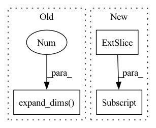

Pattern ID :40394
Before Change
dest_boxes = tf.zeros_like(anchors)
dest_boxes = tf.tensor_scatter_nd_update(dest_boxes, matched_idxes_nd, encoded_anchors)
anchor_classes = tf.expand_dims( tf.cast(anchor_classes, dest_boxes.dtype), -1 )
rr = tf.concat([dest_boxes, anchor_classes], axis=-1)
return rr
After Change
def assign_anchor_classes_by_iou_with_bboxes(bbox_labels, anchors, ignore_threshold=0.4, overlap_threshold=0.5):
num_anchors = anchors.shape[0]
valid_bboxes_pick = tf.where(bbox_labels[:, -1] > 0)[:, 0]
bbox_labels = tf.gather(bbox_labels, valid_bboxes_pick)
bboxes, labels = bbox_labels[:, :4], bbox_labels[:, 4]
anchor_ious = iou_nd(bboxes, anchors)In pattern: SUPERPATTERN
Frequency: 3
Non-data size: 3
Instances Fragment ID: 114607012
Project Name: leondgarse/keras_cv_attention_models
Commit Name: 72442f0cd3114eb4a7a30ae1a58e568c70d93172
Time: 2022-02-24
Author: leondgarse@gmail.com
File Name: keras_cv_attention_models/coco/data.py
M Class Name: AnonimousClass
N Class Name: AnonimousClass
M Method Name: assign_anchor_classes_by_iou_with_bboxes(4)
N Method Name: assign_anchor_classes_by_iou_with_bboxes(5)
M Parent Class:
N Parent Class:
M File Name: keras_cv_attention_models/coco/data.py
N File Name: keras_cv_attention_models/coco/data.py
M Start Line: 88
M End Line: 120
N Start Line: 92
N End Line: 125
Before Change
// iterative updates:
for i in range(iters):
// compute distance matrix of coords and stress
dist_mat = np.linalg.norm(np.expand_dims(best_3d_coords,1) - np.expand_dims( best_3d_coords,2 ) , axis=0)
stress = (( weights * (dist_mat - pre_dist_mat) )**2).sum() * 0.5
// perturb - update X using the Guttman transform - sklearn-like
dist_mat[dist_mat == 0] = 1e-7After Change
// iterative updates:
for i in range(iters):
// compute distance matrix of coords and stress
dist_mat = np.linalg.norm(best_3d_coords[:, :, :, None] - best_3d_coords[:, :, None, :] , axis=-3)
stress = (( weights * (dist_mat - pre_dist_mat) )**2).sum(axis=(-1, -2)) * 0.5
// perturb - update X using the Guttman transform - sklearn-like
dist_mat[dist_mat == 0] = 1e-7 Fragment ID: 114607014
Project Name: lucidrains/alphafold2
Commit Name: 8d169f1f66117683e83ed478da0ab5290d994c2b
Time: 2021-02-19
Author: ericalcaide1@gmail.com
File Name: alphafold2_pytorch/utils.py
M Class Name: AnonimousClass
N Class Name: AnonimousClass
M Method Name: mds_numpy(5)
N Method Name: mds_numpy(5)
M Parent Class:
N Parent Class:
M File Name: alphafold2_pytorch/utils.py
N File Name: alphafold2_pytorch/utils.py
M Start Line: 364
M End Line: 385
N Start Line: 363
N End Line: 389
Before Change
if position_ids is None:
position_ids = ops.arange(seq_length)
position_ids = position_ids.expand_dims(0 ) .expand_as(input_ids)
if token_type_ids is None:
token_type_ids = ops.zeros(input_shape, mindspore.int64)After Change
seq_length = input_shape[1]
if position_ids is None:
position_ids = self.position_ids[:, :seq_length]
if token_type_ids is None:
token_type_ids = ops.zeros(input_shape, mindspore.int32)
if inputs_embeds is None: Fragment ID: 114607019
Project Name: mindlab-ai/mindnlp
Commit Name: 5f7d45dbf7719eaf872d45c6664365f68d3a9504
Time: 2023-03-22
Author: 72342938+Iron-Boyy@users.noreply.github.com
File Name: mindnlp/models/mobilebert/mobilebert.py
M Class Name: MobileBertEmbeddings
N Class Name: MobileBertEmbeddings
M Method Name: construct(5)
N Method Name: construct(5)
M Parent Class: nn.Cell
N Parent Class: nn.Cell
M File Name: mindnlp/models/mobilebert/mobilebert.py
N File Name: mindnlp/models/mobilebert/mobilebert.py
M Start Line: 78
M End Line: 84
N Start Line: 85
N End Line: 90